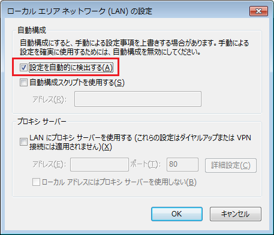
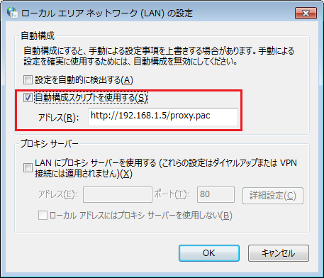
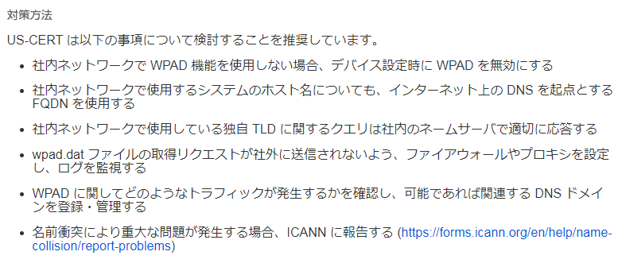

Web Proxy Auto-Discovery Protocol
WPAD（Web Proxy Auto-Discovery Protocol）とは
WPADとはWebブラウザのプロキシ設定を自動化するためのプロトコルのことです。以下の画面の通り 自動構成で「設定を自動的に検出する」をチェックすることでWPADが有効化されます。有効になると DHCPサーバやDNSサーバと通信を行い、HTTPを利用しHTTPサーバからPACファイルのダウンロード を試みます。PACファイル（ プロキシ自動設定ファイル ）は、JavaScriptで記述されたファイルです。 ※ PACファイルはWebブラウザの動作を指定する設定ファイルであり、Webブラウザが利用するプロキシサーバを指定します。
WPADの有効化

一台一台のクライアントPCのWebブラウザにプロキシ設定をする手間をなくす方法には、WPAD以外には PACファイルのURLを直接指定する方法があります。ただし、この設定方法でも以下の設定画面のように Webブラウザに直接URLを指定する必要があるため、WPADの有効化がよりシンプルな方法だと言えます。
PACファイルの指定 - 設定例

WPADを有効化した場合、とてもシンプルにWebクライアント側のプロキシサーバの設定が行えますが、 悪意あるDHCPサーバやDNSサーバが存在した場合、不正なPACファイルをダウンロードしてしまう脅威 があることから、WPADを使用するネットワークはセキュアである必要があります。
Webブラウザのプロキシ設定 - PACファイルの指定とWPADプロトコルの使用の違い
| プロキシ設定 | 説明 |
|---|---|
| PACファイルのURL指定 | PACファイルはJavaScriptで記述されたファイルです。PACファイルをWebサーバ上に置いて このサーバのURLを全てのクライアントがWebブラウザに設定しておくことにより、自動的に プロキシ設定を行う手法です。PACファイルの拡張子は「.pac」となります。 PACファイルの中身は、Webブラウザがアクセスする先のURLやIPアドレスの条件を基にして 大きく分類すると以下のどちらかの結果を返すJavaScriptで記述されたファイルとなっています。 ・ アクセス先の情報に基づいて、指定したプロキシサーバを経由して通信する。 ・ アクセス先の情報に基づいて、プロキシサーバを経由せずに直接通信する。 |
| WPADプロトコルの使用 | WPADでは、Webブラウザ自身がプロキシ設定用のPACファイルのURLを自動的に検出して、 ダウンロードして設定をすることができます。この自動設定を実現するためには、DHCPサーバ およびDNSサーバを利用します。WPADを使用する場合にはDHCPとDNSルックアップを通じて WebブラウザにPACファイルの場所を探させます。 ・ DHCPサーバを利用：DHCPサーバのDHCP INFORMメッセージを使用して設定 ・ DNSサーバを利用：「wpad」という名前のホストエントリをDNSサーバで用意 DHCP INFORMメッセージによるJavaScriptのURLの取得が失敗した場合、「wpad」という 名前のホストからhttpプロトコルを使用して「/wpad.dat」という名前の設定ファイルを取得 しようとすることから、例えば infraexpert.com ドメイン内のクライアントのWebブラウザは http://wpad.infraexpert.com/wpad.dat を探索するようになります。 |
WPADに関するDNSクエリがインターネット上のDNSサーバに送られる問題について
IPAとJPCERT/CCは、WPADに関するDNSクエリが社内ネットワークで解決されず、インターネット上の DNSサーバに送られる状況が観測されているとJVN（Japan Vulnerability Notes）で発表しました。 一定の条件のもとで、WPADに関するDNSクエリがインターネット上のDNS サーバに送られてしまう場合 悪意ある第三者によって中間者攻撃 (Man-In-The-Middle attack) を行う可能性があることから、以下の 対策方法を紹介しています。

Source：http://jvn.jp/ta/JVNTA91048063/ただし、会社で使用している社内PCを自宅に持ち帰り、インターネット接続するようなことをしなければ、 このようなDNSクエリの漏れは発生しないことからも、上述のような問題が発生することは先ずありません。